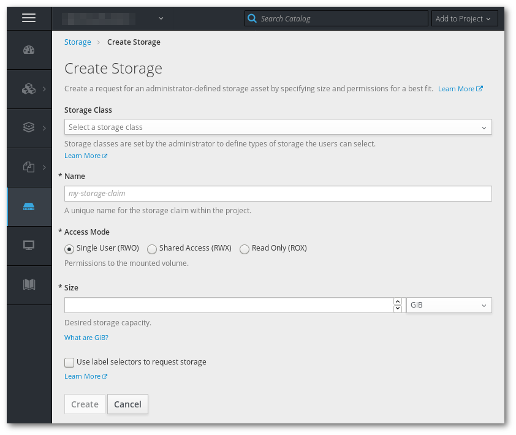

Pre-requisites, the application created in Exercise 2
In this exercise we will add persistent storage to the application.

Back in the deployment page, use the "Add storage" page to mount the volume you just created to the /static folder.
Use the web interface terminal to down load a JPG photo to the volume. (There are other ways to upload data to a volume, but that is a topic for another time)
wget https://upload.wikimedia.org/wikipedia/commons/thumb/b/bc/Juvenile_Ragdoll.jpg/1280px-Juvenile_Ragdoll.jpg \
-O /static/1280px-Juvenile_Ragdoll.jpg

Go back to the application and check if you can see the photo you downloaded.
Delete the running Pod, wait till it is recreated. If you reload the page that shows the photos, it should be still be displayed.